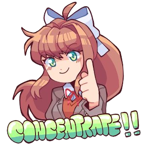

On the 9th of June in 2021, the Monika Full Week mod was released for Friday Night Funkin, as the title suggests, it was a single week mod with 3 songs. The mod would soon recieve another update titled Monika Full Week Rebooted, featuring a revamped 2nd song and gimmick notes, this all being before the massive update called Doki Doki Takeover featuring 5 new weeks and tons of bonus material, not to mention a 'What if?'-type spinoff mod was also created called Doki Doki Takeover Bad Ending.
This all led up to the release of yesterday's Doki Doki Takeover Plus. Which adds, I dunno fucking everything. 2 new weeks, tons of bonus songs a reduxed pixel week and tons of extra polish and charm. After following this mod for so long I am glad to see it reach it's 100% definitive state, a true love letter to Friday Night Funkin' and Doki Doki Literature Club, if you enjoy FNF or DDLC, go play it by clicking HERE now, NOW.
i have no idea if who made this was a genius who made it that when you concentrate you see consent rape or im just really deadass stupid